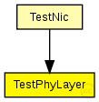

This documentation is released under the Creative Commons license
This documentation is released under the Creative Commons license(no description)
The following diagram shows usage relationships between types. Unresolved types are missing from the diagram. Click here to see the full picture.
The following diagram shows inheritance relationships for this type. Unresolved types are missing from the diagram. Click here to see the full picture.
If a module type shows up more than once, that means it has been defined in more than one NED file.
| TestNic (compound module) | (no description) |
| Name | Type | Default value | Description |
|---|---|---|---|
| testBaseDecider | bool |
shall a TestBaseDecider be used as Decider? |
|
| coreDebug | bool | ||
| usePropagationDelay | bool |
Should transmission delay be simulated? |
|
| thermalNoise | double |
the strength of the thermal noise [dBm] |
|
| useThermalNoise | bool |
should thermal noise be considered? |
|
| analogueModels | xml |
Specification of the analogue models to use and their parameters |
|
| decider | xml |
Specification of the decider to use and its parameters |
|
| sensitivity | double |
The sensitivity of the physical layer [dBm] |
|
| maxTXPower | double |
The maximum transimission power of the physical layer [mW] |
|
| timeRXToTX | double |
switchTimes [s]: |
|
| timeRXToSleep | double | ||
| timeTXToRX | double | ||
| timeTXToSleep | double | ||
| timeSleepToRX | double | ||
| timeSleepToTX | double | ||
| initialRadioState | int |
| Name | Direction | Size | Description |
|---|---|---|---|
| upperGateIn | input |
from the MAC layer |
|
| upperGateOut | output |
to the MAC layer |
|
| upperControlIn | input |
control from the MAC layer |
|
| upperControlOut | output |
control to the MAC layer |
|
| radioIn | input |
for sendDirect from other physical layers |
simple TestPhyLayer { parameters: bool testBaseDecider; //shall a TestBaseDecider be used as Decider? bool coreDebug; bool usePropagationDelay; //Should transmission delay be simulated? double thermalNoise @unit(dBm); //the strength of the thermal noise [dBm] bool useThermalNoise; //should thermal noise be considered? xml analogueModels; //Specification of the analogue models to use and their parameters xml decider; //Specification of the decider to use and its parameters //The sensitivity of the physical layer [dBm] //The sensitivity of the physical layer [dBm] double sensitivity @unit(dBm); //The sensitivity of the physical layer [dBm] double maxTXPower @unit(mW); //The maximum transimission power of the physical layer [mW] //switchTimes [s]: double timeRXToTX @unit(s); double timeRXToSleep @unit(s); double timeTXToRX @unit(s); double timeTXToSleep @unit(s); double timeSleepToRX @unit(s); double timeSleepToTX @unit(s); int initialRadioState; gates: input upperGateIn; // from the MAC layer output upperGateOut; // to the MAC layer input upperControlIn; // control from the MAC layer output upperControlOut; // control to the MAC layer input radioIn; // for sendDirect from other physical layers }
This documentation is released under the Creative Commons license